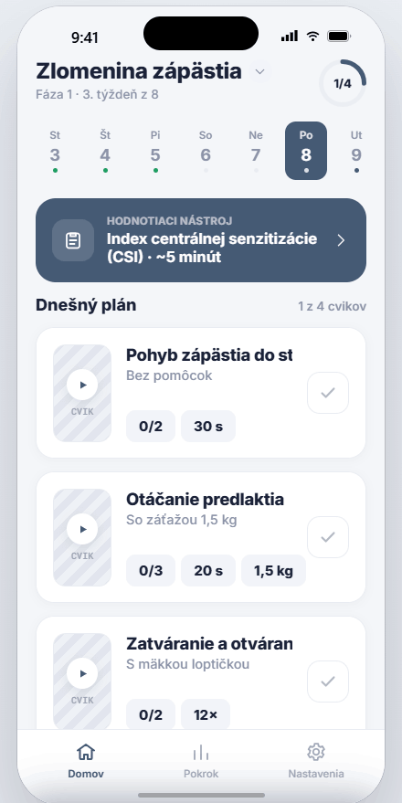
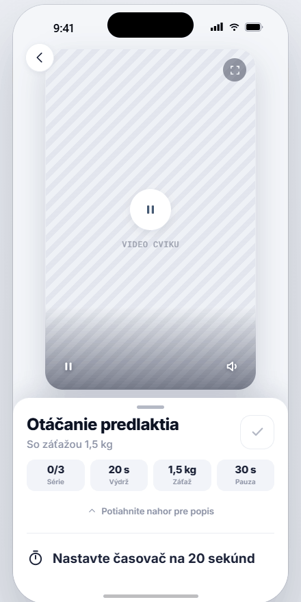

Váš terapeut sleduje váš pokrok a upraví plán vždy, keď to potrebujete. Medzi kontrolami nie ste odkázaní sami na seba.
„Prvýkrát som naozaj vedela, čo mám doma robiť."
Naskenujte a otvorte FyzioUnion,
potom zadajte kód od terapeuta.
Ešte nemáte kód? Spýtajte sa svojho
fyzioterapeuta na FyzioUnion.
FYZIOUNION.SK
Celý váš rehabilitačný plán vo vrecku — a každý cvik s videom.

Z ambulancie odchádzate s papierom a najlepšími úmyslami. Na druhý deň je polovica cvikov v hmle — tak hádate.
To nie je vaše zlyhanie. Takto jednoducho funguje pamäť.
Drží váš plán jasný, takže hádať nemusíte. Otvoríte appku — a presne viete, čo dnes máte robiť.
Vaše záznamy o bolesti zostávajú len medzi vami a vaším terapeutom.
